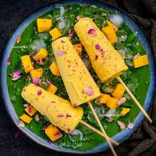

Mango Kulfi
Home

Description
Mango Kulfi is a seasonal, fruity twist to the classic kulfi, made with ripe mango pulp, thickened milk, and cardamom. It's creamy, tropical, and perfect for summer.
Ingredients
- Full Fat Milk
- Sugar
- Ripe Mango Pulp
- Cardamom Powder
- Chopped Nuts
- Saffron Strands(optional)
Steps
- Boil the milk
- Add sugar, cardamom and saffron
- Add chopped Nuts
- Cool the Mixture
- Blend Mango Pulp
- Mix the Mango Pulp in Milk and Nuts mixture
- Pour into kulfi molds
- Unmold and Serve